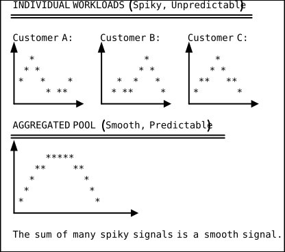
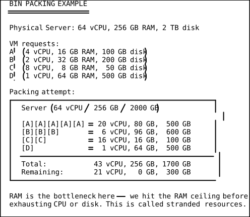

Statistical Multiplexing in the Cloud
Core Idea: Why Cloud Works Mathematically
Cloud computing is not just an economic model — it is a statistical phenomenon. The reason a hyperscaler can offer compute at lower prices than you can build it yourself comes down to a mathematical principle: when you aggregate many independent, variable workloads into a single pool, the combined demand is far smoother and more predictable than any individual workload.
This is called statistical multiplexing, and it is the hidden engine that makes cloud computing viable.

The Central Limit Theorem: Cloud’s Mathematical Foundation
The Central Limit Theorem (CLT) is one of the most important results in statistics, and it directly explains why cloud works.
The Theorem (Simplified)
If you take the sum (or average) of many independent random variables, each with finite mean and variance, the distribution of that sum approaches a normal (Gaussian) distribution as the number of variables grows — regardless of the shape of the individual distributions.
Applied to Cloud
Each customer’s resource demand is a random variable. Some are spiky, some are bursty, some are seasonal. Individually, they are hard to predict. But when the cloud provider sums thousands of these independent demands, the CLT guarantees that the aggregate demand becomes approximately normal — smooth and predictable.
MATHEMATICAL FORMULATION
========================
Let X_i = demand from customer i
Each X_i has mean mu_i and variance sigma_i^2
Total demand: S = X_1 + X_2 + ... + X_n
E[S] = sum(mu_i) (total expected demand)
Var(S) = sum(sigma_i^2) (if independent)
StdDev(S) = sqrt(sum(sigma_i^2))
KEY INSIGHT:
- Mean grows as O(n) -- linearly with customers
- StdDev grows as O(sqrt(n)) -- much slower
Coefficient of Variation = StdDev(S) / E[S]
= O(sqrt(n)) / O(n)
= O(1/sqrt(n))
As n -> infinity, relative variability -> 0
What This Means in Practice
If you have 1 customer with mean demand of 10 servers and standard deviation of 5 servers, the coefficient of variation is 50%. You need to provision for wild swings.
If you have 10,000 customers each with mean 10 and StdDev 5 (independent):
- Total mean = 100,000 servers
- Total StdDev = 5 * sqrt(10,000) = 500 servers
- Coefficient of variation = 500 / 100,000 = 0.5%
The relative unpredictability dropped from 50% to 0.5%. The provider can provision 101,000 servers (mean + 2 StdDev) and be 97.7% confident they will never exceed capacity. A single customer would need 20 servers (mean + 2 StdDev) — double their average — to achieve the same confidence.
The Law of Large Numbers: Demand Smoothing
The Law of Large Numbers (LLN) complements the CLT. While the CLT tells us the shape of the aggregate distribution, the LLN tells us that the average demand per customer converges to the expected value as the pool grows.
Practical Consequence
A large cloud provider can predict tomorrow’s total demand with far greater accuracy than any individual customer can predict their own. This means:
- Less over-provisioning needed. The buffer between provisioned capacity and actual demand shrinks as a percentage.
- Higher utilization. Servers run closer to full capacity.
- Lower cost per unit. Fixed costs spread over more utilized resources.
The Overbooking Analogy: Airlines and Cloud
Airlines routinely sell more tickets than seats. They know from historical data that a predictable fraction of passengers will not show up. On a 200-seat plane, they might sell 210 tickets, because on average 5-8% of passengers are no-shows.
Cloud providers do the same thing with compute resources:
AIRLINE OVERBOOKING vs CLOUD OVERCOMMIT
========================================
AIRLINE CLOUD PROVIDER
-------- --------
200 seats on a plane 200 physical CPU cores
Sell 210 tickets Allocate 400 vCPUs
5-8% no-show rate 50-70% average idle rate
Rare bumping (compensation) Rare contention (noisy neighbor)
Revenue per seat increases Revenue per core increases
Statistical models guide ratio Monitoring guides overcommit ratio
Why This Works in Cloud
Most virtual machines do not use their allocated CPU 100% of the time. A VM allocated 4 vCPUs might average 0.6 vCPUs of actual usage (15% utilization). The hypervisor can safely allocate those idle cycles to other VMs on the same physical host.
This is CPU overcommit, and it is one of the primary mechanisms by which cloud providers achieve profitability.
Server Utilization: Hyperscalers vs On-Premises
The utilization gap between cloud and on-premises is dramatic and is the direct result of statistical multiplexing.
Typical Utilization Rates
| Environment | Average CPU Utilization |
|---|---|
| Enterprise on-premises | 10-20% |
| Well-managed on-prem | 25-35% |
| Private cloud (VMware) | 30-45% |
| Public cloud (provider) | 55-70% |
| Hyperscaler target | 65%+ |
Why On-Premises Utilization Is So Low
-
Provisioned for peak. If your app needs 100 servers during Black Friday but 20 the rest of the year, you own 100 servers at 20% average utilization.
-
Siloed by team/application. Server A is “owned” by Team Alpha. Server B is “owned” by Team Beta. Neither team shares, even when one is idle and the other is overloaded.
-
Provisioned for growth. Teams buy for 3-5 years of projected growth. Year 1 utilization might be 10%.
-
No elasticity. Scaling up requires a procurement cycle (weeks to months). Teams over-provision as insurance.
Why Hyperscalers Achieve 60-70%
-
Massive pool diversity. Hundreds of thousands of workloads with uncorrelated demand patterns. CLT smooths the aggregate.
-
Real-time rebalancing. Live migration moves VMs between physical hosts to optimize packing.
-
Spot/preemptible instances. Sell unused capacity at deep discounts, filling valleys in the demand curve.
-
Sophisticated scheduling. Custom schedulers (like Google’s Borg) bin-pack workloads at millisecond granularity.
Peak-to-Average Ratio
The peak-to-average ratio (PAR) quantifies how spiky a workload is. It is the ratio of peak demand to average demand.
PAR = Peak Demand / Average Demand
Examples:
- E-commerce site: PAR = 10x (Black Friday spike)
- Internal HR app: PAR = 2x (payroll day spike)
- Video streaming: PAR = 3x (evening prime time)
- Batch ML training: PAR = 1.1x (steady, scheduled)
- Event ticket sales: PAR = 100x (on-sale moment)
Why PAR Matters
On-premises, you must provision for peak. Your average utilization is
approximately 1 / PAR. An e-commerce site with PAR=10x has average
utilization of just 10%.
In cloud, you only pay for what you use. PAR does not penalize you because you scale dynamically. The higher your PAR, the more cloud saves you relative to on-premises.
CLOUD SAVINGS vs PAR
=====================
PAR On-Prem Utilization Cloud Savings Potential
---- -------------------- ----------------------
2x 50% Low (cloud may cost more)
5x 20% Moderate
10x 10% High
50x 2% Very High
100x 1% Extreme
The Bin Packing Problem
At the physical level, a cloud provider’s job is a bin packing problem: fit as many customer workloads (items) as possible onto physical servers (bins), without exceeding any resource dimension (CPU, memory, disk, network).
The Challenge
Each VM has a resource profile: (vCPU, RAM, disk, network). Each physical server has a capacity profile. The goal is to maximize the number of VMs per server (density) while respecting constraints.

Stranded Resources
When one dimension (say RAM) fills up while others (CPU, disk) still have capacity, the remaining capacity is stranded — it cannot be sold. Minimizing stranded resources is a major engineering challenge for cloud providers.
This is why cloud providers offer so many instance families: compute- optimized (high CPU, low RAM), memory-optimized (low CPU, high RAM), storage-optimized, GPU instances, etc. Each family attracts workloads that match a different resource profile, reducing stranded capacity across the fleet.
Memory and CPU Overcommit Ratios
Cloud providers use different overcommit strategies for different resources.
CPU Overcommit
CPU is time-shareable: the hypervisor can multiplex many vCPUs onto fewer physical cores using time-slicing. A single physical core can serve 4-8 vCPUs if the VMs are not all compute-bound simultaneously.
Typical CPU overcommit ratios:
- Conservative: 2:1 (2 vCPUs per physical core)
- Moderate: 4:1 (common for general-purpose workloads)
- Aggressive: 8:1 (for bursty, low-utilization VMs)
- T-series/burstable: 10:1+ (with CPU credit throttling)
Note: AWS and GCP typically do NOT overcommit CPU on their standard instance types. Each vCPU maps to a physical hyperthread. Instead, they achieve density through burstable instances (T-series) and spot pricing. Other providers (many OpenStack-based clouds) do overcommit.
Memory Overcommit
Memory is not easily time-shareable. A VM that has allocated 16 GB of RAM expects those bytes to be physically present. Memory overcommit is riskier than CPU overcommit because running out causes swapping (severe performance degradation) or OOM kills.
Memory overcommit strategies:
- No overcommit (AWS, GCP standard): safest, lowest density
- Transparent page sharing (VMware): deduplicates identical pages
- Ballooning: hypervisor asks guest OS to release unused pages
- Swap to SSD: last resort, severe performance impact
- Memory compression (KVM/ZRAM): compress cold pages in RAM
Network and Storage Overcommit
Network bandwidth is inherently time-shared (packets are bursty), so overcommit is natural. A server with 25 Gbps NIC might host 20 VMs each “allocated” 5 Gbps — but they will not all burst simultaneously.
Storage IOPS follow the same pattern: overcommit is common on shared storage arrays, with QoS policies throttling individual VMs when contention occurs.
Worked Example: The Economics of Pooling
Scenario
A company has 100 application teams. Each team’s workload has:
- Average demand: 10 servers
- Standard deviation: 5 servers
- Peak demand: 25 servers (mean + 3 StdDev)
Without Pooling (On-Premises, Siloed)
Each team provisions for peak: 25 servers. Total servers: 100 teams x 25 = 2,500 servers Total average utilization: (100 x 10) / 2,500 = 40%
With Pooling (Cloud/Shared Infrastructure)
Aggregated mean: 100 x 10 = 1,000 servers Aggregated StdDev: 5 x sqrt(100) = 50 servers Provision for peak (mean + 3 StdDev): 1,000 + 150 = 1,150 servers Total average utilization: 1,000 / 1,150 = 87%
SAVINGS FROM POOLING
====================
Without pooling: 2,500 servers at 40% utilization
With pooling: 1,150 servers at 87% utilization
Servers saved: 1,350 (54% reduction)
Utilization gain: 40% -> 87% (2.2x improvement)
If each server costs $5,000/year to operate:
Annual savings: 1,350 x $5,000 = $6,750,000
Key Assumptions
This math assumes workloads are independent (uncorrelated). If all 100 teams spike at the same time (correlated demand — like everyone running end-of-month reports), the smoothing benefit disappears. Cloud providers mitigate correlation risk by:
- Diversifying across industries (retail + healthcare + finance)
- Diversifying across geographies (time zones smooth daily patterns)
- Diversifying across workload types (batch + interactive + streaming)
Correlation: When the Math Breaks Down
Statistical multiplexing assumes independence. When demands are correlated, the math changes dramatically:
INDEPENDENT vs CORRELATED DEMAND
=================================
For n workloads, each with StdDev sigma:
Independent (correlation rho = 0):
Aggregate StdDev = sigma * sqrt(n)
Perfectly correlated (rho = 1):
Aggregate StdDev = sigma * n
Partially correlated (0 < rho < 1):
Aggregate StdDev = sigma * sqrt(n + n*(n-1)*rho)
Example with n=100, sigma=5:
rho=0: StdDev = 50 (need 1,150 servers)
rho=0.1: StdDev = 158 (need 1,474 servers)
rho=0.5: StdDev = 354 (need 2,062 servers)
rho=1.0: StdDev = 500 (need 2,500 servers -- no benefit)
Real-World Correlation Events
- Black Friday: All e-commerce workloads spike simultaneously
- COVID-19: Video conferencing and streaming spiked globally
- Tax season: All accounting workloads spike in April
- Morning rush: All business apps spike at 9 AM local time
Cloud providers handle correlation through massive over-provisioning of total fleet capacity and geographic distribution. They do not rely solely on statistical smoothing — they maintain significant reserve capacity for correlated demand events.
Queuing Theory Connection
Statistical multiplexing is closely related to queuing theory. Each server is a queue that processes requests. The key result is Erlang’s formula, used in telecom since the 1900s:
KEY QUEUING RESULTS
====================
Utilization (rho) = arrival_rate / (num_servers * service_rate)
For a single server (M/M/1 queue):
Average wait time = rho / (service_rate * (1 - rho))
As rho -> 1 (100% utilization), wait time -> infinity
For a pool of c servers (M/M/c queue):
Pooling many servers allows higher utilization with
the same wait time target.
EXAMPLE:
--------
Target: 95th percentile wait < 100ms
Single isolated server: max utilization ~50%
Pool of 10 servers: max utilization ~75%
Pool of 100 servers: max utilization ~90%
Pool of 1000 servers: max utilization ~95%
This is the mathematical proof that larger pools can run at higher utilization without degrading performance. It is the same reason large call centers answer faster per agent than small ones.
Practical Implications
For Cloud Users
-
Burstable instances are statistical multiplexing in action. AWS T-series instances let you burst above baseline because most T-series VMs are idle most of the time. The provider bets on the aggregate.
-
Spot pricing reflects the demand curve. When the pool has excess capacity (smooth demand periods), spot prices drop. When demand spikes, spot prices rise or instances get reclaimed.
-
Multi-tenant services are cheaper because of multiplexing. A managed database (RDS Multi-AZ) is cheaper than the equivalent self-managed EC2 setup because the provider amortizes management overhead across thousands of tenants.
For Cloud Providers
-
Instance family diversity reduces stranded resources. More shapes = better bin packing = higher revenue per server.
-
Geographic diversity reduces demand correlation. A region in Asia peaks when North America sleeps.
-
Workload diversity is a strategic asset. A provider that serves only e-commerce is vulnerable to correlated Black Friday demand. A provider that serves e-commerce + healthcare + government has more independent demand sources.
DSA Connections
Priority Queues — Quality-of-Service Scheduling
A priority queue dequeues the highest-priority element in O(log n) time, enabling efficient scheduling when not all requests are equal. Cloud hypervisors use priority-queue-based schedulers to implement Quality of Service: latency-sensitive VM workloads receive higher scheduling priority than background batch jobs, so when the aggregate demand curve is smooth but individual requests compete for the same physical core, the scheduler ensures premium tenants are served first. AWS’s Nitro scheduler and Google’s Borg both maintain per-host priority queues where the “priority” is derived from instance type, placement constraints, and SLA tier — allowing the provider to overcommit CPU safely while guaranteeing that high-priority VMs never starve.
Bin Packing (First-Fit Decreasing) — Server Consolidation
Bin packing is a classic NP-hard optimization problem: fit items of varying sizes into the fewest fixed-capacity bins. The document’s server consolidation challenge — fitting VMs with multi-dimensional resource profiles (CPU, RAM, disk, network) onto physical servers — is a multi-dimensional bin packing instance. Cloud schedulers use heuristics like First-Fit Decreasing, where VMs are sorted by their largest resource dimension and placed onto the first server with sufficient remaining capacity across all dimensions. The “stranded resources” problem described in the document is exactly the bin-packing residual: when RAM fills first, leftover CPU and disk capacity cannot be utilized. Instance family diversity is the provider’s strategy to reduce this residual by offering items (VM shapes) that better tessellate against server capacities.
Scheduling Algorithms (Weighted Fair Queuing) — CPU Overcommit
Weighted Fair Queuing assigns each flow a share of bandwidth proportional to its weight, ensuring no flow is starved while maximizing utilization. The CPU overcommit ratios discussed in this document — 2:1, 4:1, 8:1 — work because the hypervisor’s scheduler implements WFQ-style time-slicing: each vCPU gets a guaranteed minimum share of physical core time, but idle shares are redistributed to active vCPUs in proportion to their weights. This is the mechanism that allows 400 vCPUs to map onto 200 physical cores with acceptable performance. When all vCPUs are active simultaneously (the correlated-demand scenario the document warns about), WFQ degrades gracefully to each vCPU receiving exactly its guaranteed share rather than causing a crash.
Queuing Theory (M/M/c Model) — Pool Sizing
The M/M/c queue models a system with Poisson arrivals, exponential service times, and c parallel servers, and it directly underpins the document’s discussion of why larger pools sustain higher utilization at the same latency target. The key result is that average waiting time drops super-linearly as c grows while holding utilization constant: a pool of 100 servers at 90% utilization has lower average wait than a pool of 10 servers at 90% utilization. This is the mathematical justification for hyperscaler consolidation — the same reason a 200-agent call center answers faster per agent than ten 20-agent centers. Cloud capacity planning tools use M/M/c formulas to determine how many instances an Auto Scaling Group needs to maintain p99 latency targets under projected arrival rates.
Key Takeaways
-
Cloud works because of statistics, not just technology. The CLT and LLN guarantee that aggregating many independent workloads produces smooth, predictable demand. This lets providers run at higher utilization and pass the savings to customers.
-
The larger the pool, the greater the benefit. Utilization and cost efficiency improve with scale, which is why hyperscalers have a structural economic advantage.
-
Overcommit is not cheating — it is math. When average utilization is 15%, selling 4x the physical capacity is safe and rational. The hypervisor and scheduler manage contention at the margin.
-
Independence is the key assumption. When workloads are correlated (everyone spikes at once), the smoothing benefit disappears. Providers mitigate this with geographic and industry diversification.
-
Higher PAR = higher cloud savings. The spikier your workload, the more you benefit from cloud’s ability to scale dynamically versus provisioning for peak.
-
Bin packing and stranded resources are the provider’s headache. Instance families, live migration, and spot pricing are all tools to maximize utilization and minimize waste.
-
Queuing theory confirms the math. Larger pools can sustain higher utilization at the same latency target, which is why consolidation always beats isolation from an efficiency standpoint.